今回はKaggleに登録して、チュートリアルのデータ参照をしてみます。実際にモデルを作成したりするのはまた別の機会に。
Kaggleは企業や研究者がデータを（場合によっては懸賞金も）提供し、世界中のエンジニアが最適な機械学習のモデルを競い合うプラットフォームのこと。これだけ聞くと恐れ多い感じもしますが、初心者にとってはデータ分析がタダで練習できるステキなサイトです。しかも参考になる他人のソースや解説資料なども見放題と来たもんで、非常に学べるサイトです。
Kaggleに掲載されているコンペティションは、基本的に企業や個人がデータを提供し期限を設けて開催するものです。それとは別に、常時開催され提出期限のないチュートリアルがあります。Titanicチュートリアルはその中でも割と有名なチュートリアルです。Titanicとは「あの」タイタニック号のことであり、提供されるデータは乗船していた顧客名簿です。このデータを用いて、生存予測を行うというチュートリアルです。
Kaggleにアカウントを開設します。登録の方法は、とくに躓くようなところはないと思いますので割愛します。登録するとアイコンはアヒルになります。なぜに？
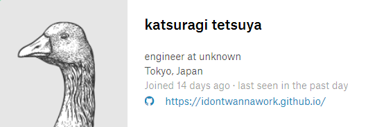
Kaggleのアカウント作成が終わったら、コンペ参加のためTitanicチュートリアルにアクセスします。「Join Competition」をクリックするとポップアップウィンドウが出現しますので、おもむろにに「I Understand and Accept.」をクリックします。要は「同意する、ってボタン押したら、コンペのルールに準拠してもらうからね」ということです。これに同意しないと先に進まないので同意します。
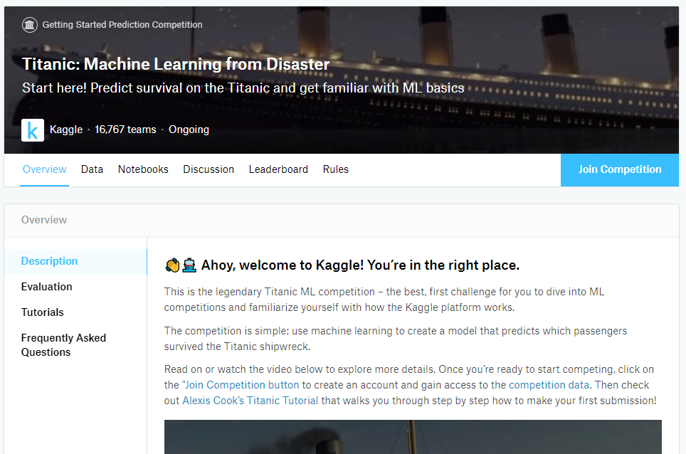
するとこんな感じの画面になるはずです。「You have accepted the rules for this competition. Good luck!」
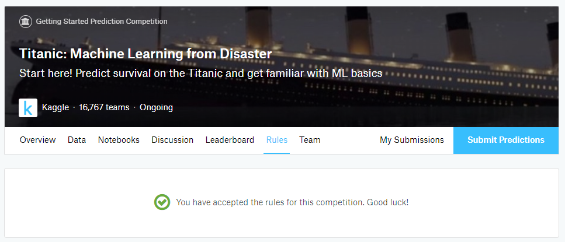
なお、ルールなどを確認したい場合は「Rules」にいろいろ記述してあります。コンペティションによっては、そのコンペに限定した特別なルールがあったりするので確認が必要です。
チュートリアルに参加したところで、今度はNotebookを新規で作成します。コンペティションのトップにある「Notebooks」をクリックすると、右側に「New Notebook」と表示されますので、そのボタンをクリックします。
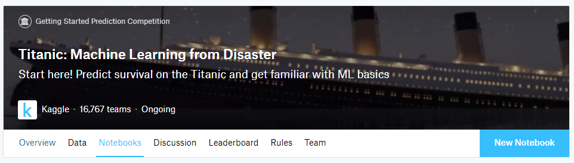
すると画面が切り替わって、新規でNotebookを作成する画面が表示されます。基本的にはあまり変更する必要はないとは思います。「SHOW ADVANCED SETTINGS」をクリックすると詳細な設定項目が表示されますが、GPUの使用だとかGCPとアカウントをリンクするかといった設定（デフォルトではどちらもOFFに設定されている）なので、やっぱりあまり変更する必要はとりあえずないと思います。
ちなみに、NotebookとScriptの違いですが、NotebookはJupyter Notebookです。なのでMarkdownを記述しつつPythonコードを書くスタイルです。Scriptはその名の通りスクリプトで、コード単体です。どちらがいいかはお好みで。ここではNotebookを選択しました。
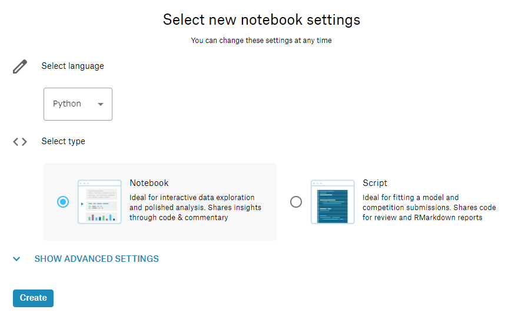
下の「Create」ボタンを押すと処理が進んでNotebookが作成されます。すると下記のような画面に遷移します。
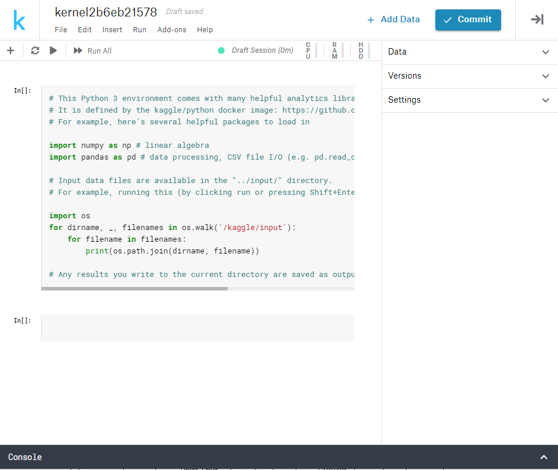
これでNotebookが作成できました。Jupyter NotebookなのでMarkdownで任意の記述を行いつつ、Pythonソースを記述かつ実行できます。Notebookの任意の場所にカーソルを置くとMarkdown用、あるいはPython用のセルを追加するボタンが出現します。これでセルを追加していろいろ記述するわけです。
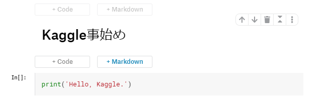
実行は、セル単位であれば実行したいセルにカーソルを置くと、三角形の再生ボタンが左側に表示されます。コイツをクリックすることで、そのセルを実行できるわけです。
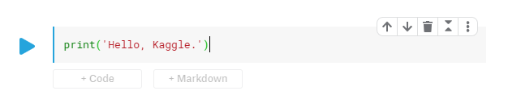
実行するとそのセルの直下に実行結果が表示されます。
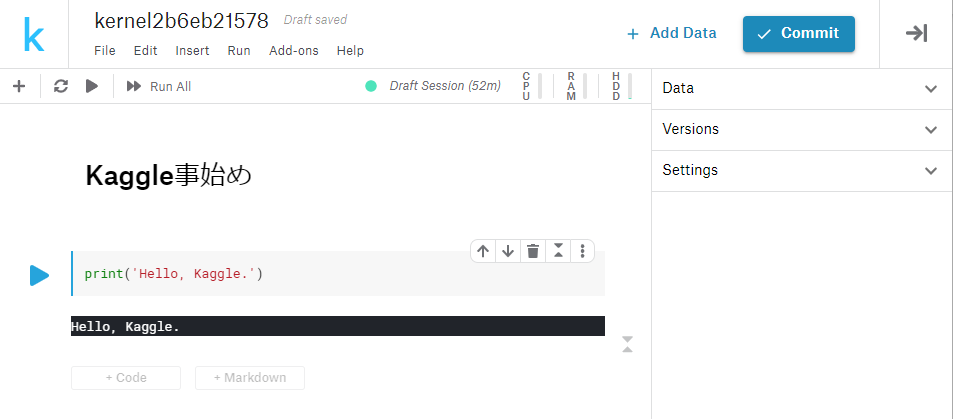
Notebookを作成したら右上の「Commit」ボタンを押します。下の画像だとすでに何回かボタンを押した後なのでVersionが3まで行っちゃってますが・・・。
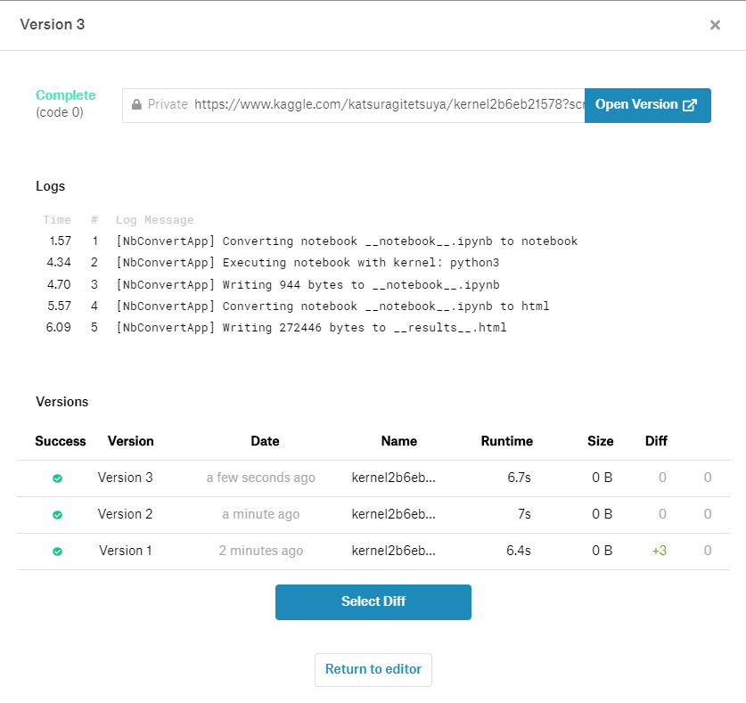
「Logs」の部分に処理内容が表示されます。ただし、ここではNotebookに処理内容を記述していないのであまり意味のないCommit結果になっていますが・・・。
なにはともあれ、「Notebookを作成し処理を記述、できあがったらCommitして必要に応じてチューニングを施す」のが、Kaggleのコンペにおける基本的な行動です。
Notebookを作成したので、コンペ用のデータを読み込んで内容を確認してみます。Notebookの内容は下記のとおりとします。データはコンペのメインページに戻り「Data」タブを参照します。
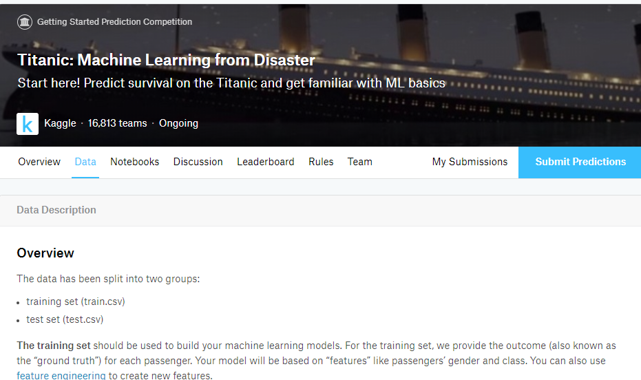
「Overview」にはどんな名前のデータがあるか、データにはどんな情報が含まれているかなどの情報が記載されています。そのまま読み進めていくと、ページの中頃に「Data Sources」という項目があり、データがダウンロードできるようになっています。
タイタニックのチュートリアルで利用するファイルは「train.csv」と「test.csv」の2ファイルです。とりあえずトレーニング用の「train.csv」について、その内容を確認してみます。そんなわけで下記のようなソースを書きました。
import pandas as pd
train = pd.read_csv('train.csv')
train.head(3)これを実行すると・・・そんなファイルねぇよ！って怒られます。
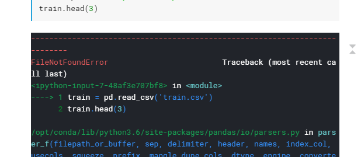
えー。まぁなんの考慮もなくべた書きしたところで、そんなテキトーなコードがちゃんと動作するはずもないですな。じゃあどうすれば参照できるのか調べます。
Kaggleではコンペそのものにはデータがキチンと準備されています（じゃないとコンペできないから当たり前ですね）。が、参加者が各々で作成したNotebookから参照するためには、データがどのフォルダに格納されているかを確認する必要があります。
作成したNotebookの右側に「Data」を押すと、下記のようなフォルダが表示されます。
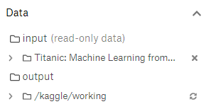
展開してみるとこんな感じ。
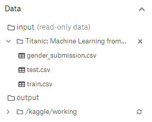
じゃあこのファイルをどうやって参照するかですが、まずはinputフォルダはいいとして、その下のフォルダはなんかずいぶんと長い名前です。これ全部指定しなきゃだめなの・・・？とりあえずその辺を確認したいので、ざっくりこんなコードを書いて実行してみます。
import os
print(os.listdir('../input'))
print(os.listdir('../input/titanic'))listdir()は指定したフォルダの中身を返します。実行結果を見てみます。
['titanic']
['train.csv', 'gender_submission.csv', 'test.csv']どうやらinput/titanic/と指定すれば、配下のファイルが参照できそうです。というわけで冒頭のファイルを修正してみました。
import pandas as pd
train = pd.read_csv('../input/titanic/train.csv')
train.head(3)これを実行してみると、下記のようにファイルの内容が表示されました。これでファイルの参照ができるようになりました。
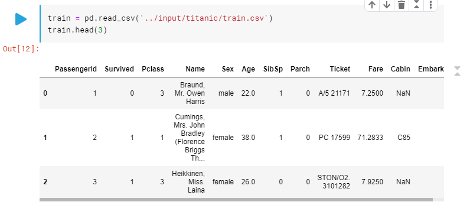
Kaggleのコンペでは、最終的に指定された形式でファイルを提出します。Kaggleは提出されたファイルを評価して順位をつけるわけですが、提出するデータはその体裁があらかじめ決められています。その体裁のサンプルとなるデータがどこにあるかというと、タイタニックのコンペ画面に戻って「Data」タブの中にあります。
なお、解析のためのデータも同じ「Data」タブの中にあります。
「Overview」にはどんな名前のデータがあるか、データにはどんな情報が含まれているかなどの情報が記載されています。そのまま読み進めていくと、ページの中頃に「Data Sources」という項目があり、データがダウンロードできるようになっています。
ここでダウンロードするのは「gender_submission.csv」です。これは提出用のサンプルファイルです。このファイルの内容を確認することで、どんな形式のファイルをKaggleに提出すればいいかがわかります。
ファイル名にマウスカーソルを合わせるとダウンロードボタンが出現しますので、ローカルの任意の場所にダウンロードしておきます。ここでダウンロードしたデータは後で利用します。
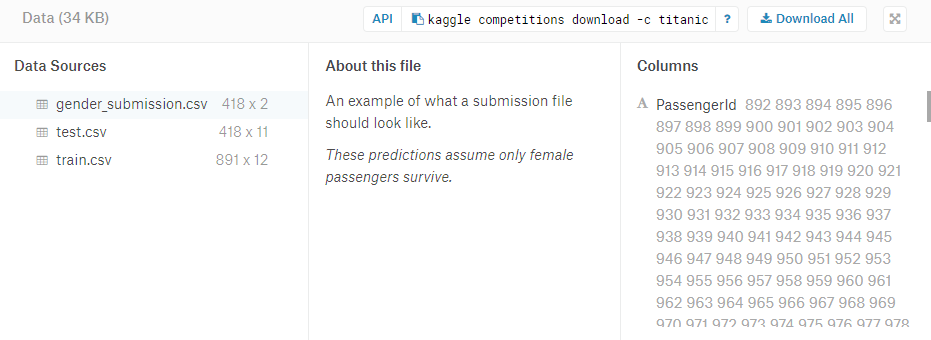
今度はページの上位に戻って「Submit Predictions」ボタンを押します。
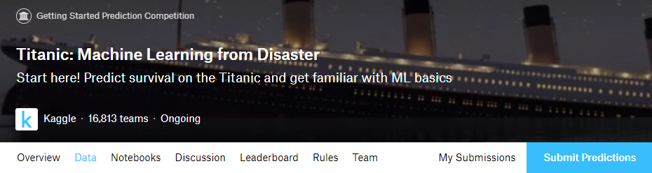
表示されたページの中央、右側あたりにデータをアップロードする場所があります。そこに、さっきダウンロードした「gender_submission.csv」をドラッグアンドドロップします。
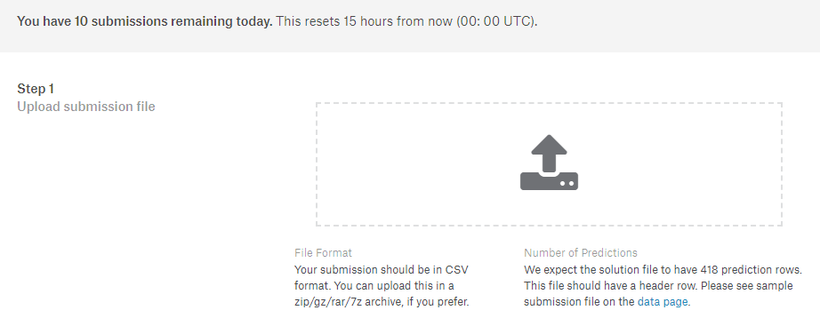
データのアップロードが完了したら一番下にある「Make Submission」を押します。するとサンプルのデータで順位が算出されます。
アップロードしたのはサンプルなので提出したところでどうにかなるものではないですが、提出の練習にはなるかもしれません。なお、サンプルを提出することのペナルティとかはとくにない・・・と思います。
「データ分析するのにゃ、そもそもデータが採取されていないとできないんだよぉ！」っていうのは、データ分析に携わる人なら一度は思ったりすると思います。データ取得はされてても、ただデータがあるだけで項目の意味や単位が全部バラバラ・・・なんてケースもあったり。その点Kaggleならデータはちゃんと必要十分にそろってますし、なにより実データに近いものがアップされるので「あー、こういう形でデータ取ってくりゃいいのね」っていう参考にもなります。そして、世界中のデータサイエンティストがアップしたモデルやNotebookの内容を見ることで、「こう前処理すりゃよかったのか」「あー、このアルゴリズムを使うと有効なわけね」なんて知見も蓄積できること請け合いです。
そんなわけで、貴方もぜひKagglerになりませんか。